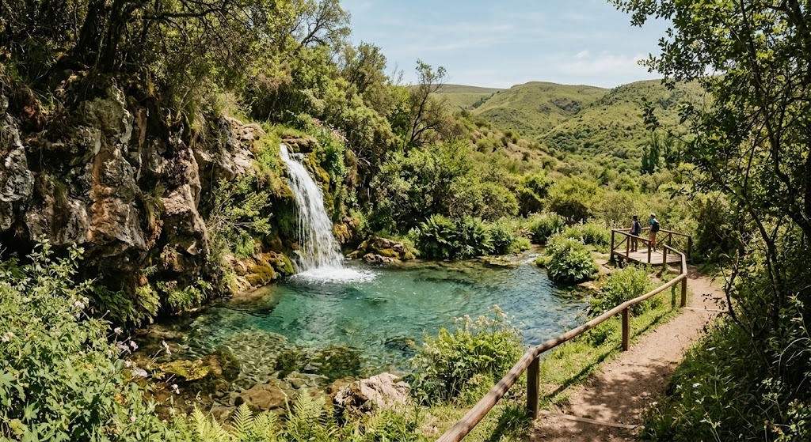
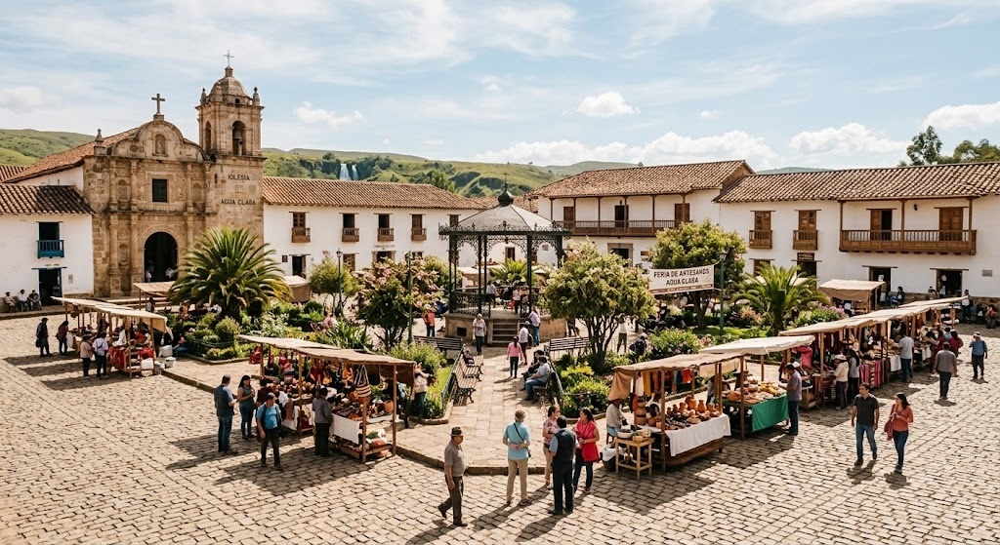
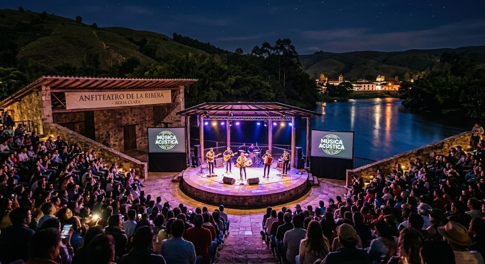

Carnaval de las Aguas Vivas
El evento más representativo de la ciudad, con desfiles de comparsas, música en vivo y ferias gastronómicas durante el mes de febrero.
Ubicada en un valle rodeado de sierras, Ciudad Agua Clara combina su tradición comercial con una activa propuesta cultural. El crecimiento de la ciudad estuvo ligado desde sus orígenes al Gran Manantial del Norte, su principal recurso natural y punto de encuentro regional.
Conocida como la perla de los manantiales, se destaca por su tranquilidad, sus ferias de artesanos y una comunidad que celebra sus raíces en cada evento.



El evento más representativo de la ciudad, con desfiles de comparsas, música en vivo y ferias gastronómicas durante el mes de febrero.
Encuentro anual que reúne a músicos de la provincia en el anfiteatro municipal, con entrada libre y gratuita.
Senderismo guiado por la quebrada del manantial y actividades náuticas en el río.